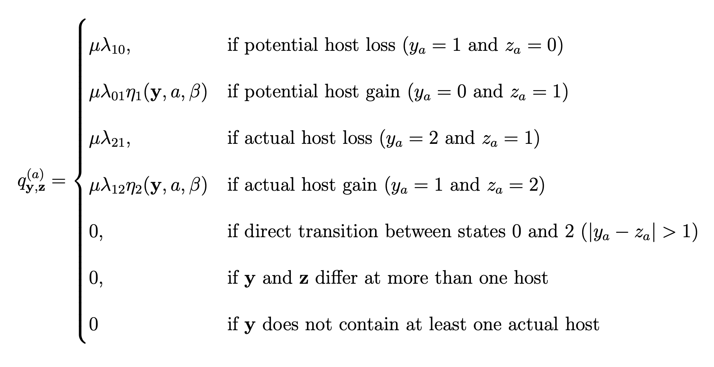
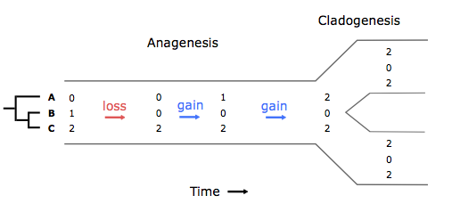
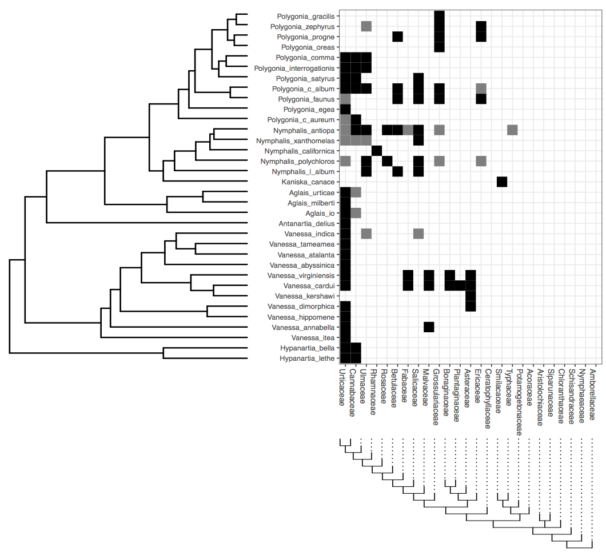
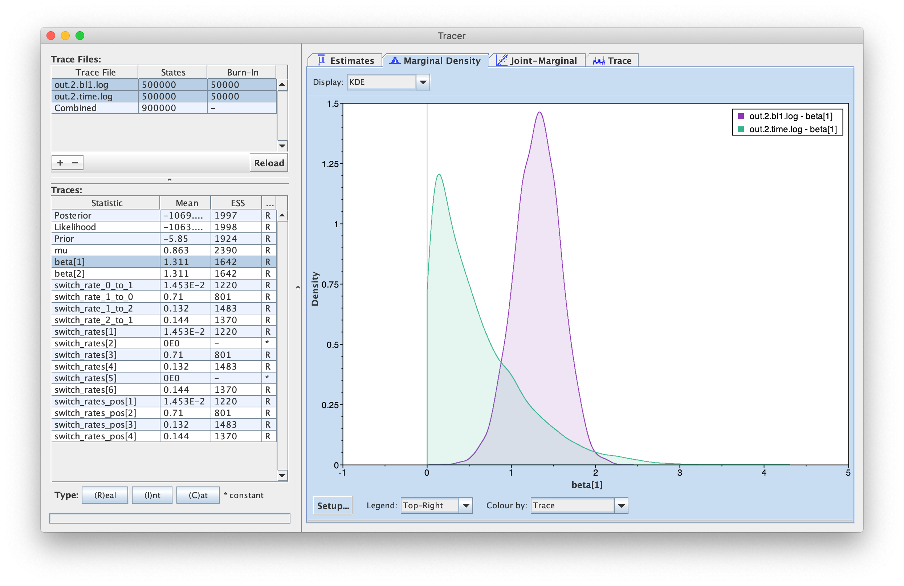
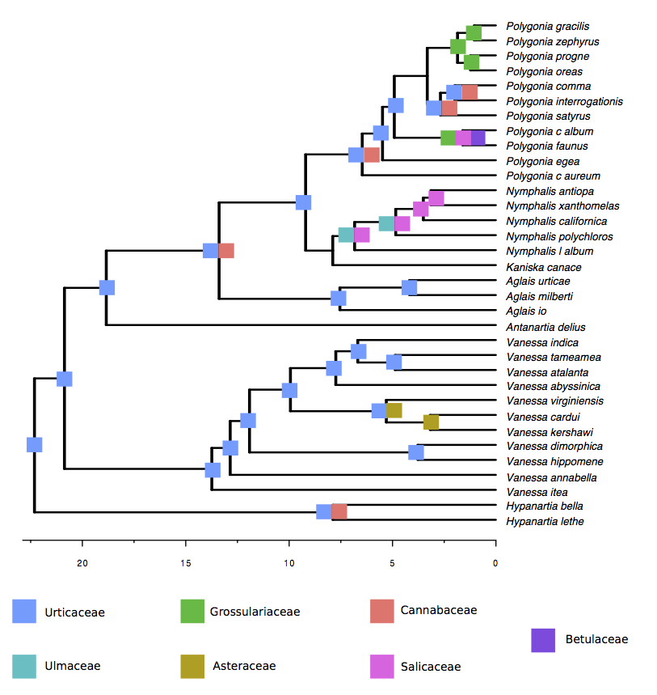

Extant ecological interactions are the result of a long history of coevolution between interacting lineages. In the case of host-parasite systems, species associations are continuously evolving via gains and losses of hosts. Given that parasites are usually specialized to their hosts, most methods developed to study coevolution focus on congruence between host and parasite phylogenies and use cospeciation as the null expectation (missing reference). Recent years have seen increasing evidence that parasites change what hosts they target much more often than previously thought. Thus, new methods are required to appropriately reconstruct coevolutionary histories. Below, we describe a model of host-parasite coevolution that was introduced in (missing reference), which is based on the Dispersal-Extinction-Cladogenesis approach Ree et al. (2005) used to model geographic range evolution (see Introduction to phylogenetic biogeography with the DEC model for an overview of the DEC model). However, in this first version, the model does not include evolutionary changes during parasite cladogenesis. This tutorial reviews the modeling concepts developed in (missing reference) then describes how to model host repertoire evolution and reproduce the results published in the paper.
We wish to model the co-evolution of ecological interactions between M extant parasite taxa and N host taxa in a phylogenetic context. Each parasite uses one or more hosts, which we encode as a character set called the host repertoire. During the course of evolution, any parasite lineage may gain or lose a host from its repertoire or modify whether a host is actually or potentially used by the parasite. Furthermore, it is likely that parasites have a phylogenetic preference when expanding their host repertoires, favoring species that are closely related to species they parasitize over distantly related species.
This tutorial follows the modeling strategy developed in (missing reference), which identifies three central challenges to modeling host repertoire evolution: (1) defining the host repertoire character, (2) defining an event-based model for how host repertoires evolve in terms of gain and loss rates and phylogenetic distances among hosts in the repertoire, and (3) designing an inference method to fit our model to data. The next sections gives context to possible solutions to these problems.
Rooted and time-calibrated phylogenetic trees describe the evolutionary relationships among the M parasite taxa and among the N host taxa. In this tutorial, the trees are considered to be known without error.
Each parasite taxon has a host repertoire, which is represented by a vector of length N. At any given time, each host taxon can assume one of three states with respect to a parasite lineage: 0 (non host), 1 (potential host), or 2 (actual host). We call the set of all potential and actual hosts fundamental repertoire, and the set of only actual hosts, realized repertoire (analogous to fundamental and realized niche). For example, say there are two hosts, A and B.
| Repertoire (set) |
Repertoire (vector) |
Size of fundamental repertoire |
Size of realized repertoire |
State |
|---|---|---|---|---|
| $\emptyset$ | 00 | 0 | 0 | 1 |
| a | 10 | 1 | 0 | 2 |
| A | 20 | 1 | 1 | 3 |
| b | 01 | 1 | 0 | 4 |
| B | 02 | 1 | 1 | 5 |
| ab | 11 | 2 | 0 | 6 |
| Ab | 21 | 2 | 1 | 7 |
| aB | 12 | 2 | 1 | 8 |
| AB | 22 | 2 | 2 | 9 |
We only allow host repertoires in which the parasite has at least one actual host (states 3, 5, 7-9 in this example).
The transition from state 0 to state 1 represents the gain of the ability to use the host, and the transition from state 1 to state 2 happens when the parasite actually starts to use the host in nature. If we assume that gains and losses of hosts occur according to a continuous-time Markov chain, the probability of a given coevolutionary history can be easily calculated based on a matrix, Q, containing the instantaneous rates of change between all pairs of host repertoires, and thus describing the Markov chain (see Introduction to phylogenetic biogeography with the DEC model for more details).
Another new feature of our model is the ability to infer the effect of host phylogenetic relatedness on colonizations, i.e. the gain of a host depends on the phylogenetic distance between the given host and those currently used by a lineage. To formalize these dynamics, let qy,z($a$) be the rate of change from host repertoire y to repertoire z by changing the state of host a. Also, let $\lambda_{ij}$ be the rate at which an individual host changes from state $i$ to state $j$, and $\eta({\bf y},a,\beta)$ be a phylogenetic-distance rate modifier. We define the instantaneous rate of change as

and the phylogenetic-distance rate modifier function as
\[\begin{aligned} \eta({\bf y},a,\beta) = e^{-\beta d/\overline{d}}, \end{aligned}\]where $\beta$ controls the effect of $d$, the average pairwise phylogenetic distance between the new host, $a$, and the hosts currently occupied in y; and $\overline{d}$ is the average phylogenetic distance between all pairs of hosts. Pairwise phylogenetic distance is defined as the sum of branch lengths separating two leaf nodes.

Table 1). Time proceeds from left to right. Only anagenetic events are modeled, i.e. repertoires are identically inherited during cladogenesis. In this example, a repertoire of three hosts changes along a branch of the parasite tree. Gain rates are multiplied by the phylogenetic-distance rate modifier function, $\eta$, using the host phylogeny.Let’s calculate the instantaneous rate for the second gain event in Figure 1 for two different values of $\beta$. Say $\mu = 0.5$, $\lambda_{12} = 0.2$, $d_{\bf AC}=10$ and $\overline{d}=8$. In this case,
\[\begin{aligned} q_{\bf aC,AC} = q_{102,202} = 0.5 \times 0.2 \times e^{-1.25\beta} \end{aligned}\]If $\beta = 0$, $q_{102,202} = 0.5 \times 0.2 \times 1 = 0.1$.
Whereas if $\beta = 1$, $q_{102,202} = 0.5 \times 0.2 \times 0.29 = 0.029$.
What about the rate of gain of b? Calculate $q_{002,012}$ for $\beta = 0$ and $\beta =1$, given that $d_{\bf BC}=4$ and $\lambda_{01} = 0.1$.
In this tutorial, we will go through the inference of host repertoire evolution in Nymphalini butterflies conducted in (missing reference). The data set includes 34 butterflies species and plants from 25 angiosperm families. For each butterfly species, host plants used in nature were coded as actual hosts, plants that are not used in nature, but there’s evidence that the larvae can feed on were coded as potential hosts, and those plants that the larvae do not eat were coded as non hosts.

Download data
We have provided data and script files for this tutorial (see top of the page)
Once you have downloaded the zip file by clicking on the arrow above, unzip that and navigate inside of that directory. This directory should be called
revbayes_host_repOnce inside, you should see two directories:
dataandscriptsOnce you have all of the files, open RevBayes and ensure that your working directory is the top directory above the
datafolder (e.g.,revbayes_host_rep).
In this tutorial we are going to perform the analysis with two different host trees: the time-calibrated tree (angio_25tips_time.phy), and a tree where all branch lengths were set to 1 (angio_25tips_bl1.phy). This is because we wanted to test if cladogenetic distances and anagenetic distances between host families have different effects on host colonization. Note that the columns in the nexus file containing the interaction data are ordered by the
Now, let’s begin.
First, create file management variables for input
phy_host_fn = "data/angio_25tips_time.phy"
phy_parasite_fn = "data/Nymphalini.phy"
dat_parasite_fn = "data/interaction_matrix.nex"
then read in our character data
dat_parasite <- readDiscreteCharacterData(dat_parasite_fn)
For this tutorial we’ll assume we know the host and parasite phylogenies without error. Note that our host repertoire inference method uses a root branch length to estimate the stationary probabilities at the root node. Our parasite tree file (Nymphalini.phy) is modified to have a branch length assigned to the root node. If you provide a tree without a root branch length, the software will consider it to be the same length as the tree height.
phy_parasite <- readTrees(phy_parasite_fn)[1]
Here is where you can change the host tree to angio_25tips_bl1.phy when you repeat the analysis
phy_host <- readTrees(phy_host_fn)[1]
Retrieve dataset dimensions
n_host_tips <- phy_host.ntips()
n_host_branches <- 2 * n_host_tips - 2
n_parasite_branches <- 2 * phy_parasite.ntips() - 2
n_sites <- dat_parasite.nchar()
Add more information to the name of output files
out_str = "out.time"
out_fn = "output/" + out_str
We need to create vectors of moves and monitors to later inform how our Markov chain Monte Carlo (MCMC) analysis needs to propose and sample new model parameters and host repertoire histories. Also, we use monitors to record the information we want to use
moves = VectorMoves()
monitors = VectorMonitors()
Next, we’ll build the transition rate matrix for the model. In this example, the rate matrix requires four rates: two gain rates (0->1 and 1->2) and two loss rates (1->0 and 2->1).
First, create a vector containing all transition rates and assign it a move
switch_rates_pos ~ dnDirichlet( [1,1,1,1] )
moves.append( mvSimplex(switch_rates_pos, alpha=10, weight=2, tune=false) )
We’ll now create a set of deterministic nodes to help us map our simplex of transition rates onto specific host gain and loss events
switch_rate_0_to_1 := switch_rates_pos[1]
switch_rate_0_to_2 := 0.
switch_rate_1_to_0 := switch_rates_pos[2]
switch_rate_1_to_2 := switch_rates_pos[3]
switch_rate_2_to_0 := 0.
switch_rate_2_to_1 := switch_rates_pos[4]
Next, we assemble our named rate variables into a vector
switch_rates := v( switch_rate_0_to_1, switch_rate_0_to_2, switch_rate_1_to_0, switch_rate_1_to_2, switch_rate_2_to_0, switch_rate_2_to_1 )
We then construct a rate matrix for three states (0: non-host, 1: potential host, 2: actual host) using our vector of named rates. We found that the MCMC mixes better when the Q matrix is not rescaled such that the expected number of events per unit time per character is 1 (rescaled=false). This might not be true for every data set and you can always change it to rescaled=true.
Q_char := fnFreeK( transition_rates=switch_rates, rescaled=false )
Note that Q_char is a rate matrix for a single character, which would define the rates of host repertoire evolution if all hosts were gained and lost at rates independent of what other hosts were in the repertoire.
To let host gain and loss rates be modified by other hosts in the repertoire, we must define how host usage evolves interdependently using a rate modifier function.
In this analysis, we wish to model how the average phylogenetic distance between a new possible host and currently parasitized hosts might increase or decrease the rate of that host gain event.
To this end, we now create the phylogenetic distance rate modifier function (effect of host phylogeny on gain rate). First, we define a parameter (beta) that defines how influential phylogenetic distances should be on host repertoire evolution. The beta parameter is a vector with two values: the first for the gain 0->1 and the second for 1->2. In this tutorial, we assume they are equal
beta[1] ~ dnExp(1)
beta[2] := beta[1]
Because the value of beta[2] is determined to be equal to beta[1], we only need to create a single move to update beta[1]
moves.append( mvScale( beta[1], weight=1 ) )
Next, we pass our beta parameter into a special function called fnHostSwitchRateModifier that rescales the host gain rate accordingly
rate_modifiers[1] := fnHostSwitchRateModifier(tree=phy_host, gainScale=beta)
Now we can build the rate matrix for all characters (= number of hosts) based on the gain and loss rates and the phylogenetic distance rate modifier
Q_host := fnRateGeneratorSequence(Q=Q_char,
numChars=n_host_tips,
rateModifiers=rate_modifiers)
We then rescale all rates in $\lambda$ with $\mu$. We refer to $\mu$ as the maximum rate (or rate, for short) of host repertoire evolution, since $0 \leq \mu \lambda_{ij} \leq \mu$.
mu ~ dnExp(10)
moves.append( mvScale(mu, weight=2) )
Next, set uniform subroot state priors over the states (0,1,2). The subroot is the start of the branch leading to the root node.
rf_host <- simplex(1,1,1)
We have fully specified all of the parameters of our phylogenetic model. Our model components are then encapsulated in a distribution called the phylogenetic continuous-time Markov chain for data-augmented character sequences, and we use the dnPhyloCTMCDASequence constructor function to create this node. This distribution is similar to dnPhyloCTMC except specialized to use data-augmented histories under the non-iid model to integrate over coevolutionary histories. For more details on how this distribution computes the probability of a specific coevolutionary history, see (missing reference).
m_host ~ dnPhyloCTMCDASequence(tree=phy_parasite,
Q=Q_host,
branchRates=mu,
rootFrequencies=rf_host,
nSites=n_host_tips,
type="Standard")
Once the PhyloCTMCDASequence variable has been created, we can attach our observed host repertoires (interaction matrix) to the tip nodes in the parasite tree
m_host.clamp(dat_parasite)
Let’s add the remaining moves to update the character histories. These moves share several arguments to configure how they update histories. ctmc and qmap_seq indicate which model variables are relevant to the move. The lambda argument assigns the probability of proposing a new history for any individual character, e.g. if lambda=0.2and n_host_tips equals 25, then we would expect the move to propose 5 new host interaction histories per update. The graph argument specifies whether the move performs on a single branch (graph="branch") or on a single node and its three incident branches (graph="node"). The proposal argument controls which MCMC proposal algorithm we use to sample and propose new branch histories; in our case, we use the rejection sampling algorithm of Nielsen (2002) (proposal="rejection"). Finally, the weight argument controls the relative number of times that move is sampled per MCMC iteration.
First we create a move to update character histories along a random branch
moves.append( mvCharacterHistory(ctmc=m_host,
qmap_seq=Q_host,
lambda=0.2,
graph="branch",
proposal="rejection",
weight=n_parasite_branches*2) )
Then, we create a move to update the character histories for a random node and the three incident branches
moves.append( mvCharacterHistory(ctmc=m_host,
qmap_seq=Q_host,
lambda=0.2,
graph="node",
proposal="rejection",
weight=n_parasite_branches) )
Before we can start the analysis, we need to define the number of generations and the sampling frequency of the MCMC
n_gen = 1e6
sample_freq = 50
We also need to set up a vector of monitors to record the states of our Markov chain. All the monitor functions start with mn. First, we will initialize the screen monitor that will report the states of specified variables to the screen. This monitor mostly helps us see the progress of the MCMC run.
monitors.append( mnScreen(mu, beta, printgen=sample_freq) )
Then we create a new monitor variable that will output the states for all model parameters when passed into a MCMC function.
monitors.append( mnModel(printgen=sample_freq, filename=out_fn + ".log") )
The mnFile monitor will record the states for only the parameters passed in as arguments. We use this monitor to output the parasite tree, even though the parasite tree value remains constant. This is useful for mapping the indices of internal nodes onto the tree. These indices will also be used in the next monitor, which outputs all sampled coevolutionary histories
monitors.append( mnFile( phy_parasite, filename=out_fn + ".tre", printgen=sample_freq) )
monitors.append( mnCharacterHistorySummary( filename=out_fn + ".history.txt",
ctmc=m_host,
tree=phy_parasite,
printgen=sample_freq ) )
Finally, we wrap the entire model in a single object. To do this, we only need to give the model() function a single node and it will find all of the other nodes in the model
model = model(m_host)
Create MCMC object from the model, moves, and monitors variables.
ch = mcmc(model, monitors, moves)
Then run the MCMC analysis, which will sample parameter values and character histories in proportion to their posterior probability
ch.run(n_gen)
Now you can repeat the analysis using the host tree angio_25tips_bl1.phy. Remember to change the output file name!
You can use the output files out.time.log and out.bl1.log to plot the posterior distributions for the four transition rates, the overall clock, and the phylogenetic distance rate modifier. We can examine the log files in the program Tracer. Once you open this program, you can open the log files using the “File > Import Tracer File” option, navigate to the directory in which you ran the analysis and select the relevant log file. Or you can simply drag and drop the files into “Trace Files” (the empty white box on the upper left of the program).
Take a look at the output obtained for the analysis with the time-calibrated host tree (out.time.log) and with the host tree with branch lengths set to 1 (out.bl1.log). Let’s focus on the posterior distributions of $\beta$.

Discussion point
As we have seen above, we estimate different values of $\beta$ when using different host trees. Which host tree has a stronger effect on host gains? What does that mean in terms of evolution of plant traits that are used by the butterflies?
Now let’s move on to ancestral state reconstruction. To get the ancestral states, use the R script ancestral_states.R. This script produces a dataframe containing the posterior probability of potential and actual interactions between hosts and parasites (internal nodes in the parasite phylogeny). With that information, you can generate a figure like the one below.

In cases where we don’t have information about potential hosts in our data set, the inference might not work well with the 3-state model. It is tricky to infer a state when you only have indirect evidence of it (actual hosts must have been potential hosts in the past). One option is to skip potential hosts altogether and describe a 2-state model where there are only non-hosts (coded as 0) and actual hosts (coded as 2).
For that, we need to change the code in two places: the Q matrix
switch_rates_pos ~ dnDirichlet( [1,1] )
switch_rate_0_to_1 := 1e-6 # MCMC gets stuck on first gen if rates = 0.
switch_rate_0_to_2 := switch_rates_pos[1]
switch_rate_1_to_0 := 1e-6
switch_rate_1_to_2 := 1e-6
switch_rate_2_to_0 := switch_rates_pos[2]
switch_rate_2_to_1 := 1e-6
and the root state frequencies
rf_host <- simplex(1,0,1)
And that’s it. Everything else should be the same.